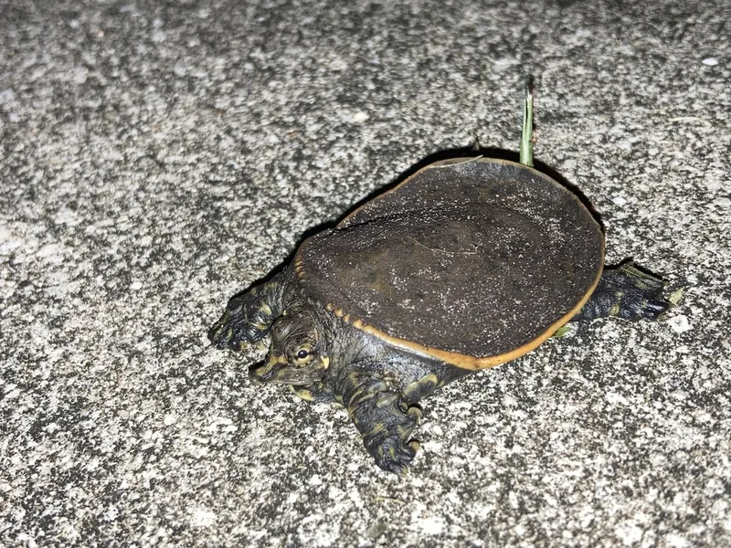

北米産スッポン（ソフトシェル）の一種。甲羅が革質で軽快な泳ぎが特徴。成体は35〜60cmに達する大型種で、砂底・流水環境が必要な上級者向け。

1年後の甲長は15〜20cm程度。Apalone属の中でも大型化しやすい種で、成長速度が速い傾向がある。砂底への潜り込みと長い首を伸ばして水面呼吸するアンブッシュスタイルが観察の見どころ。革質の甲羅を傷つけないため、細かい砂底と鋭利な装飾物のない水槽設計が飼育の大前提になる。
10年後、オスは甲長25〜30cm程度。メスは35〜60cmに達する場合があり、Apalone属最大クラス。90〜120cm以上の大型水槽が必須で、ろ過能力も高い設備が必要。20〜40年の寿命があり、成体の管理を早い段階から計画しておく必要がある。
フロリダスッポンのメスはApalone属最大クラスで、60cm近くに達する個体の報告もある。シナスッポンやスムーススッポンと同じサイズ感で計画すると、成体時に完全に対応できなくなる可能性が高い。「Apalone最大種」として、購入前から120cm以上の水槽・超大型の砂底エリア・強力なろ過を前提に計画しておくことが安定飼育への唯一の近道になりやすい。
北米の河川・湖に生息するApalone属スッポン。革質の甲羅を持ち、砂底に潜る習性が強い。強い顎で魚・カエル・甲殻類を捕食する。成体は35〜60cmに達する大型種。
砂底（川砂2〜5cm）への潜り込みが本種の重要な行動です。底砂なしの飼育はストレスの原因になります。大型外部フィルターで水質を管理してください。
← 横にスクロールできます
| 種名 | 甲長 | 難易度 | 必要環境 | 特徴 |
|---|---|---|---|---|
| フロリダスッポン このページ | L（35〜60cm） | 上級 | 90〜120cm | 本種 |
| スッポン（シナスッポン） | 25〜35cm | 中〜上級 | 90cm〜 | アジア産 |
| スッポンモドキ | 50〜70cm | 上級 | 120cm〜 | CITES II |
| マタマタ | 35〜45cm | 上級 | 90cm〜 | 特殊飼育 |